Machine Learning in R
RaukR 2019 • Advanced R for Bioinformatics
Nikolay Oskolkov

In this tutorial, we talk about what Machine Learning does and why to use it. We discuss Supervised and Unsupervised as well as Linear vs. Non-Linear algorithms. As an example of model evaluation we will concentrate on K-fold cros-validation and compare most important Machine Learning algorithms. Finally, we will briefly cover Artificial Neural Networks (ANN) and check how it compares to traditional Machine Learning algorithms.
1 What is Machine Learning?
In this section we will brifly describe what Machine Learning (ML) is, why to use it in Computational Biology, and how it works. In order to introduce principals of ML we will start with a few basic definitions.
- Machine Learning is a powerful technique that allows to map input X to output Y as
\[Y = f ( X )\]
without necessarily knowing the functional form of f. Machine Learning provides two major benifits that have a wide application in e.g. Biomedicine:
- Prediction: Biomedicine needs precise classification of disease sub-types in order to make correct treatment prescription
- Feature Selection: Biomedicine needs biomarkers for understanding mechanisms of a disease
Beyond biomedical applications, ML is widely used in business, industry, physics, astronomy, and even in psychology, archeology etc. Internet is heavily based on Artificial Intellegence (AI), Deep Learning and Machine Learning and Google, Amazon, Facebook and Microsoft are world leading drivers and promoters of AI.
Machine Learning can be categorized into:
- Parametric: assumtion on f(X), often linear, easy to learn, fast, little data needed, poor prediction (example: Linear and Logistic Regression)
- Non-Parametric: assumtion free, difficult to train, slow, needs a lot of data, higher prediction power (example: Random Forest, LASSO)
Machine Learning by default involves five basic steps:
- Split data set into train, validation and test subsets.
- Fit the model in the train subset.
- Validate your model in the validation suset via calculating the error of prediction.
- Repeat steps 1-3 many times and find hyperparameters of your model which minimize the error of reproducibility from 3.
- Test the accuracy of the optimized model on the test subset for final evaluation.
The steps 1-4 are called cross-validation (CV). CV is a common technique for finding optimal hyperparameters in Machine Learning.
- Finally, Machine Learning is divided into:
- Supervised: data are labelled and Y is predicted from X as Y=f(X)
- Unsupervised: only X is present and we infer hidden patterns in X
2 How Does Machine Learning Work?
Let us demonstrate how Machine Lerning works using a toy example. Let us simulate a noisy linear relation of two variables x and y with a known coefficient (true beta):
set.seed(12345)
N<-100
true_beta<-2
x<-rnorm(N)
y<-true_beta*x+rnorm(N)
df<-data.frame(x,y)
head(df,10)
plot(y~x,data=df)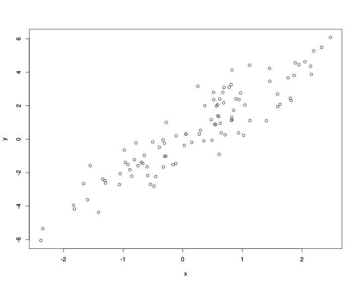
Let us randomly split our sample into training (70% of sample) and test (30% of sample) data sets. Further, let us display the training (blue points) and test (red points) sets on the linear regression plot:
set.seed(123)
train<-df[sample(1:dim(df)[1],0.7*dim(df)[1]),]
test<-df[!rownames(df)%in%rownames(train),]
df$color[rownames(df)%in%rownames(train)]<-"blue"
df$color[rownames(df)%in%rownames(test)]<-"red"
head(df,10)
plot(y~x,data=df,col=df$color)
legend("topleft",c("Train","Test"),fill=c("blue","red"),inset=0.02)
abline(lm(y~x,data=train),col="blue")
abline(lm(y~x,data=test),col="red")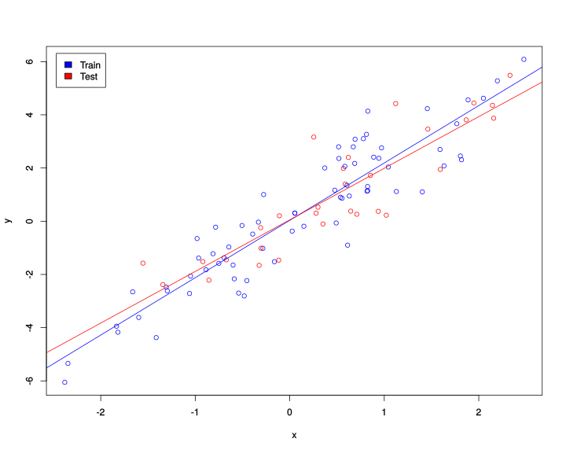
The blue line is the linear fit obtained on the training set while the red line corresponds to the fit on the test data set. We are not supposed to fit the model on the test data set but we show the red line for comparision in order to demonstrate that the lines do not coinside which means that the model trained on the training data set will not fit perfectly the test data. This is how it is in real biology where there is always substantial amount of noise and technical variation.
Let us now again fit the linear regression model (train the model) on the training data set and try to use this model in order to predict (validate, evaluate) the slope on the test data set. For this purpose we will plot predicted vs. real y values in the test data set and calculate how much of the variance in y we can capture with our model:
summary(lm(y~x,data=train))
test_predicted<-as.numeric(predict(lm(y~x,data=train),newdata=test))
plot(test$y~test_predicted,ylab="True y",xlab="Predicted y")
abline(lm(test$y~test_predicted))
summary(lm(test$y~test_predicted))##
## Call:
## lm(formula = y ~ x, data = train)
##
## Residuals:
## Min 1Q Median 3Q Max
## -2.25403 -0.53634 0.06931 0.65362 2.31960
##
## Coefficients:
## Estimate Std. Error t value Pr(>|t|)
## (Intercept) 0.03481 0.12024 0.289 0.773
## x 2.15630 0.10628 20.289 <2e-16 ***
## ---
## Signif. codes: 0 '***' 0.001 '**' 0.01 '*' 0.05 '.' 0.1 ' ' 1
##
## Residual standard error: 0.9991 on 68 degrees of freedom
## Multiple R-squared: 0.8582, Adjusted R-squared: 0.8561
## F-statistic: 411.7 on 1 and 68 DF, p-value: < 2.2e-16
##
##
## Call:
## lm(formula = test$y ~ test_predicted)
##
## Residuals:
## Min 1Q Median 3Q Max
## -1.80597 -0.78005 0.07636 0.52330 2.61924
##
## Coefficients:
## Estimate Std. Error t value Pr(>|t|)
## (Intercept) 0.02058 0.21588 0.095 0.925
## test_predicted 0.89953 0.08678 10.366 4.33e-11 ***
## ---
## Signif. codes: 0 '***' 0.001 '**' 0.01 '*' 0.05 '.' 0.1 ' ' 1
##
## Residual standard error: 1.053 on 28 degrees of freedom
## Multiple R-squared: 0.7933, Adjusted R-squared: 0.7859
## F-statistic: 107.4 on 1 and 28 DF, p-value: 4.329e-11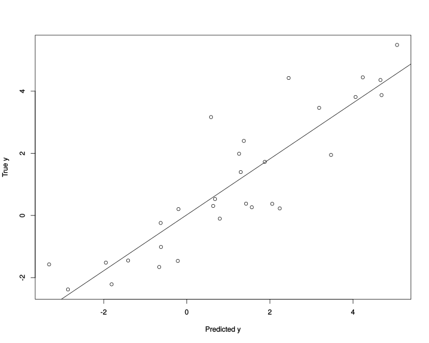
Thus, our model trained on the training data set explains approximately 86% of variation in the training daat set and 76% of variation in the test data which can be seen from the reported above adjusted R squared statistics. In theory, the model can explain 100% of variation in the training data set (it does not in our case because we used random noise to model relationship between the variables), but this is not interesting for us, this is the case of so-called “over-fitting”, we will come back to this later. More interesting for us is how much of the variation the model explains in the unseen test data, this will be an ultimate objective criterion of how successful our model is. So in our case the model is not ideal but not too bad. Note that in order to establish a confidence interval for that statistic we need to randomly split the data into training and test subsets many times and calculate the distribution of adjusted R squared.
3 The Curse of Dimensionality
Above we described a simplified Machine Learning design, i.e. a minimal training and validation one must always do. A more comprehensive Machine Learning analysis can be achieved by fine-tuning hyperparameters which almost all models have. The Machine Learning toy example from the previous section did not involve hyperparameters due to its simplicity such as only two variables were regressed against each other, Gaussian distribution was assumed by default. We can make a more complicated, i.e. closer to real world model and demonstrate how we can use cross-validation to adjust additional (hyper-)parameters.
For this purpose we need to define a hyperparameter for our model. This could be for example the number of variables to adjust the main variable x of interest for. Let us assume that y is a phenotype of interest (disease, speciation, cell state etc.) and x is the main explanatory variable of interest (genotype, methylation status, gene expression etc.) whose effect we would like to study. Suppose the relation y vs. x is confounded by other factors of unwanted variation (batch, ethnicity, age etc.) which we will call PC1, PC2, …, PC10 assuming that the unwanted variation can be factorized via e.g. PCA and adjusted for in the y vs. x linear regression model. Let us simulate the PCs which are correlated with y slightly weaker (smaller effect size) than x is correlated with y.
set.seed(1)
for(i in 1:10)
{
df[,paste0("PC",i)]<-1*(1-i/10)*y+rnorm(N)
}
head(df,10)Please note the coefficient 1 in front of (1-i/10). This implies, PC1 will be correlated with y with coefficient 0.9, PC2 wil be correlated with 0.8 etc. down to PC10 which is not correlated with y at all, we model PC10 by just a white noise. Now let us monitor the strength of correlation y vs. x as we adjust the model for more and more PCs.
summary(lm(y~x,data=df))
summary(lm(y~x+PC1,data=df))
summary(lm(y~x+PC1+PC2,data=df))
summary(lm(y~x+PC1+PC2+PC3+PC4+PC5+PC6+PC7+PC8+PC9+PC10,data=df))
effect<-vector()
effect<-append(effect,2)
adj_r_squared<-vector()
adj_r_squared<-append(adj_r_squared,summary(lm(y~x,data=df))$adj.r.squared)
for(i in 1:10)
{
formula<-as.formula(paste0("y~x+",paste0("PC",seq(1:i),collapse="+")))
effect<-append(effect,summary(lm(formula,data=df))$coefficients[2,1])
adj_r_squared<-append(adj_r_squared,summary(lm(formula,data=df))$adj.r.squared)
}
plot(effect~seq(from=0,to=10,by=1),type='o',xlab="PRINCIPAL COMPONENTS",ylab="EFFECT")
plot(adj_r_squared~seq(from=0,to=10,by=1),type='o',xlab="PRINCIPAL COMPONENTS",ylab="VARIANCE EXPLAINED BY MODEL")##
## Call:
## lm(formula = y ~ x, data = df)
##
## Residuals:
## Min 1Q Median 3Q Max
## -2.20347 -0.60278 -0.01114 0.61898 2.60970
##
## Coefficients:
## Estimate Std. Error t value Pr(>|t|)
## (Intercept) 0.02205 0.10353 0.213 0.832
## x 2.09454 0.09114 22.982 <2e-16 ***
## ---
## Signif. codes: 0 '***' 0.001 '**' 0.01 '*' 0.05 '.' 0.1 ' ' 1
##
## Residual standard error: 1.011 on 98 degrees of freedom
## Multiple R-squared: 0.8435, Adjusted R-squared: 0.8419
## F-statistic: 528.2 on 1 and 98 DF, p-value: < 2.2e-16
##
##
## Call:
## lm(formula = y ~ x + PC1, data = df)
##
## Residuals:
## Min 1Q Median 3Q Max
## -1.54485 -0.49785 -0.05715 0.41808 2.12392
##
## Coefficients:
## Estimate Std. Error t value Pr(>|t|)
## (Intercept) -0.05986 0.07752 -0.772 0.442
## x 1.07261 0.13269 8.083 1.78e-12 ***
## PC1 0.56263 0.06281 8.958 2.38e-14 ***
## ---
## Signif. codes: 0 '***' 0.001 '**' 0.01 '*' 0.05 '.' 0.1 ' ' 1
##
## Residual standard error: 0.7517 on 97 degrees of freedom
## Multiple R-squared: 0.9143, Adjusted R-squared: 0.9126
## F-statistic: 517.7 on 2 and 97 DF, p-value: < 2.2e-16
##
##
## Call:
## lm(formula = y ~ x + PC1 + PC2, data = df)
##
## Residuals:
## Min 1Q Median 3Q Max
## -1.24744 -0.44379 -0.01225 0.36788 1.62660
##
## Coefficients:
## Estimate Std. Error t value Pr(>|t|)
## (Intercept) -0.04641 0.06166 -0.753 0.453
## x 0.88065 0.10849 8.118 1.60e-12 ***
## PC1 0.35675 0.05684 6.276 1.00e-08 ***
## PC2 0.39744 0.05243 7.581 2.16e-11 ***
## ---
## Signif. codes: 0 '***' 0.001 '**' 0.01 '*' 0.05 '.' 0.1 ' ' 1
##
## Residual standard error: 0.5976 on 96 degrees of freedom
## Multiple R-squared: 0.9464, Adjusted R-squared: 0.9447
## F-statistic: 565.3 on 3 and 96 DF, p-value: < 2.2e-16
##
##
## Call:
## lm(formula = y ~ x + PC1 + PC2 + PC3 + PC4 + PC5 + PC6 + PC7 +
## PC8 + PC9 + PC10, data = df)
##
## Residuals:
## Min 1Q Median 3Q Max
## -0.88558 -0.41183 -0.00967 0.30393 1.42820
##
## Coefficients:
## Estimate Std. Error t value Pr(>|t|)
## (Intercept) -0.03481 0.05217 -0.667 0.50633
## x 0.55269 0.10805 5.115 1.82e-06 ***
## PC1 0.26169 0.05119 5.112 1.84e-06 ***
## PC2 0.31127 0.04773 6.521 4.26e-09 ***
## PC3 0.11629 0.05098 2.281 0.02496 *
## PC4 0.20586 0.05142 4.003 0.00013 ***
## PC5 0.02275 0.04476 0.508 0.61251
## PC6 0.20339 0.05053 4.025 0.00012 ***
## PC7 0.13035 0.05241 2.487 0.01476 *
## PC8 0.04039 0.04749 0.851 0.39733
## PC9 -0.06749 0.04944 -1.365 0.17573
## PC10 0.03254 0.05127 0.635 0.52735
## ---
## Signif. codes: 0 '***' 0.001 '**' 0.01 '*' 0.05 '.' 0.1 ' ' 1
##
## Residual standard error: 0.4999 on 88 degrees of freedom
## Multiple R-squared: 0.9656, Adjusted R-squared: 0.9613
## F-statistic: 224.8 on 11 and 88 DF, p-value: < 2.2e-16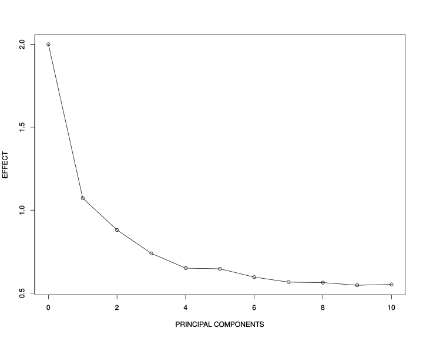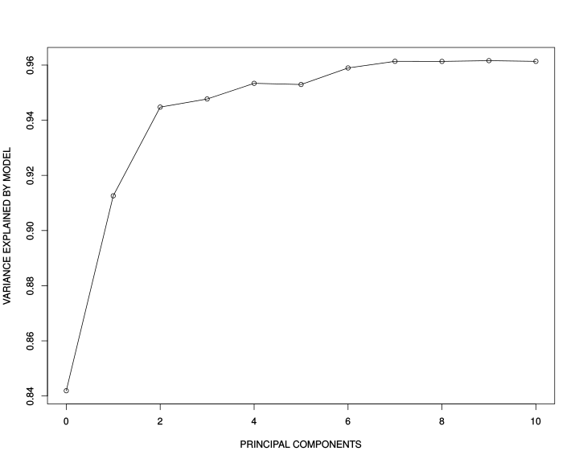
This is really striking! The unadjusted model gives us almost the true effect size 2 while when we adjust for PC1, it drops drammatically down to 1.07. If we adjust for PC1 and PC2 it becomes 0.88 and so on down to 0.55 when adjusting for all 10 PCs. And now look at the adjusted R squared statistic demonstrating how much of variation in y is explained by the explanatory variables. It is increasing!
What does it mean? It means that we are fiting the data better and better (explain more and more variation in y) by adding more explanatory variables into the model due to the combined effect of all the variables. Simultaneously, the capasity of our model to discover true x vs. y effect of correlation is rapidly decreasing when we go to high-dimensional space. In other words, prediction of our model is increasing but individual effects are no longer true although the ranking variables by their importance is still true, look at the effect sizes and see that x is still the most important. This is known as “the curse of dimensionality” and is one of the major chellanges in Data Science. The toy example above emphizes the fact that Machine Learning is preddominantly multivariate, i.e. the goal is to get the best prediction and feature selection, however individual effects and biological meaning of each variable gets duluted and sucrifised for the beter multivariate model performance.
We know that both the PCs and x are slightly correlated with y, thus PCs are also correlated with x, therefore we have multiple correlated variables in the linear regression model, this is the case of multi-collinearity which is not bad by itself but breaks the assumtions of Maximum Likelihood principle which lies behind the linear regression model.
As a final shot, let us look at the effect of x and adjusted R squared when only PC10 is a covariate, remember PC10 was a pure white noise.
summary(lm(y~x+PC10,data=df))##
## Call:
## lm(formula = y ~ x + PC10, data = df)
##
## Residuals:
## Min 1Q Median 3Q Max
## -2.36000 -0.60286 0.03532 0.53669 2.47187
##
## Coefficients:
## Estimate Std. Error t value Pr(>|t|)
## (Intercept) 0.02501 0.10233 0.244 0.8075
## x 2.07959 0.09045 22.992 <2e-16 ***
## PC10 0.17423 0.09559 1.823 0.0714 .
## ---
## Signif. codes: 0 '***' 0.001 '**' 0.01 '*' 0.05 '.' 0.1 ' ' 1
##
## Residual standard error: 0.9991 on 97 degrees of freedom
## Multiple R-squared: 0.8487, Adjusted R-squared: 0.8456
## F-statistic: 272 on 2 and 97 DF, p-value: < 2.2e-16Correct! The effect size of x and adjusted R squared are very similar to the ones from the unadjusted model. Thus, less multi-collinearity brings more correct individual effect size estimates and avoids inflation of adjusted R squared statistic.
What if we increase the strength of covariation between y and PCs from 1 to 2 and 3, i.e. make PCs covary with y equally or even stronger than x?
effect_master<-list()
for(k in 1:3)
{
for(i in 1:10)
{
df[,paste0("PC",i)]<-k*(1-i/10)*y+rnorm(N)
}
effect<-vector()
effect<-append(effect,2)
for(i in 1:10)
{
formula<-as.formula(paste0("y~x+",paste0("PC",seq(1:i),collapse="+")))
effect<-append(effect,summary(lm(formula,data=df))$coefficients[2,1])
}
effect_master[[k]]<-effect
}
plot(effect_master[[1]]~seq(from=0,to=10,by=1),type='o',xlab="PRINCIPAL COMPONENTS",ylab="EFFECT",xlim=c(0,10),ylim=c(0,2),col="blue",main="Effect of x vs. y at different covariation between y and PCs")
points(effect_master[[2]]~seq(from=0,to=10,by=1),col="green")
lines(effect_master[[2]]~seq(from=0,to=10,by=1),col="green")
points(effect_master[[3]]~seq(from=0,to=10,by=1),col="red")
lines(effect_master[[3]]~seq(from=0,to=10,by=1),col="red")
legend("topright",c("1","2","3"),title="Covariation",fill=c("blue","green","red"),inset=0.02)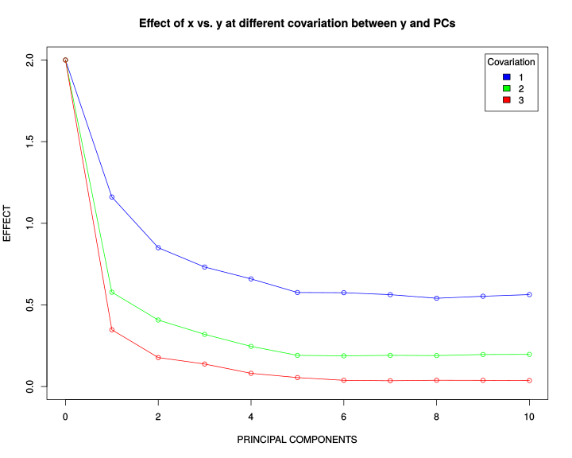
Again, very strikingly, the effect of x reaches zero when increasing the strength of covariation between y and the PCs. This implies that the PCs are more important variables for explaining variation in y so the rank and effect of variable x is becoming negligible.
4 How Does Cross-Validation Work?
Now let us ask a question: how many PCs should we include into our model, are they all equally informative for predicting the relation y vs. x? Thus the number of PCs to include into the model becomes a hyperparameter which we should somehow tune. Another valid question to ask would be: why not to include all 10 PCs? The reason we do not want to do it is because our model will loose its generalizibility, i.e. a lot of fitting parameters will make the model work best in one particular data set but not in another. Our goal is to figure out a balance between the goodness of fit and the minimal number of fitting parameters required, this is known as Bias vs. Variance tradeoff in Machine Learning.
The optimal number of PCs can be found via cross-validation (CV), a procedure which minimizes the error of reproducibility of the fit across multiple sub-samples drawn from the data. In this way we produce the most generalizable model which very little depends on a particular training data set.
To demonstrate how cross-validation works, let us randomly assign 60% of the data to training set, 10% to validation set and 30% to test set. Further, let us display the training (blue points), validation (red points) and test (green points) sets on the linear regression plot:
set.seed(1234)
train<-df[sample(1:dim(df)[1],0.6*dim(df)[1]),]
validate_and_test<-df[!rownames(df)%in%rownames(train),]
validate<-validate_and_test[sample(1:dim(validate_and_test)[1],0.25*dim(validate_and_test)[1]),]
test<-validate_and_test[!rownames(validate_and_test)%in%rownames(validate),]
df$color[rownames(df)%in%rownames(train)]<-"blue"
df$color[rownames(df)%in%rownames(validate)]<-"red"
df$color[rownames(df)%in%rownames(test)]<-"green"
plot(y~x,data=df,col=df$color)
legend("topleft",c("Train","Validate","Test"),fill=c("blue","red","green"),inset=0.02)
abline(lm(y~x,data=train),col="blue")
abline(lm(y~x,data=validate),col="red")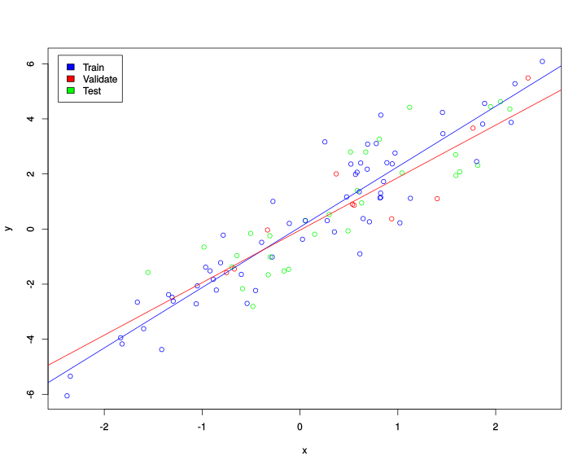
Recall that previously we had just training and test subsamples. Why do we need one additional (validation) subsample? We need the validation subsample in order to tune the hyperparameter of the model, this is a part of training of the model. The validation subsample should not have anything to do with the test subsample, the latter will be used for an ultimate evaluation of the model while the former will participate in the training cross-validation procedure.
Let us now fit the linear regression model in the training set and validate the error (root mean squared difference between predicted y from the trained model for the validation set and the real y in the validation set) in the validation data set:
set.seed(1)
train_and_validate<-df[sample(1:dim(df)[1],0.7*dim(df)[1]),]
test<-df[!rownames(df)%in%rownames(train_and_validate),]
N_cv<-100
error<-vector()
error_null<-vector()
for(j in 1:N_cv)
{
train<-train_and_validate[sample(1:dim(train_and_validate)[1],(6/7)*dim(train_and_validate)[1]),]
validate<-train_and_validate[!rownames(train_and_validate)%in%rownames(train),]
error_null<-append(error_null,sqrt(sum((predict(lm(y~x,data=train),newdata=validate)-validate$y)^2)/dim(validate)[1]))
}
error<-append(error,mean(error_null))
for(j in 1:10)
{
error_at_pc<-vector()
formula<-as.formula(paste0("y~x+",paste0("PC",seq(1:j),collapse="+")))
for(i in 1:N_cv)
{
train<-train_and_validate[sample(1:dim(train_and_validate)[1],(6/7)*dim(train_and_validate)[1]),]
validate<-train_and_validate[!rownames(train_and_validate)%in%rownames(train),]
error_at_pc<-append(error_at_pc,sqrt(sum((predict(lm(formula,data=train),newdata=validate)-validate$y)^2)/dim(validate)[1]))
}
error<-append(error,mean(error_at_pc))
}
plot(error~seq(from=0,to=10,by=1),type='o',xlab="PRINCIPAL COMPONENTS",ylab="RMSE")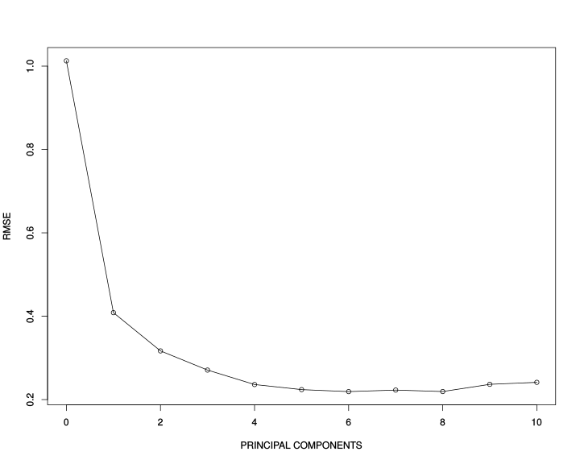
Looks like the error drops drammatically when adding PC1 and PC2 and after that does not change much. We can conclude that the most generalizable model which also gives a fair goodness of fit is the one adjusted for two first PCs, i.e. “y~x+PC1+PC2”. Let us perform the final evaluation of the optimized/trained model on the test data set and report the final accuracy (adjusted R squared of the model):
summary(lm(predict(lm(y~x+PC1+PC2,data=df),newdata=test)~test$y))##
## Call:
## lm(formula = predict(lm(y ~ x + PC1 + PC2, data = df), newdata = test) ~
## test$y)
##
## Residuals:
## Min 1Q Median 3Q Max
## -0.48101 -0.09220 -0.02343 0.20324 0.48982
##
## Coefficients:
## Estimate Std. Error t value Pr(>|t|)
## (Intercept) 0.02482 0.05025 0.494 0.625
## test$y 1.00612 0.02116 47.554 <2e-16 ***
## ---
## Signif. codes: 0 '***' 0.001 '**' 0.01 '*' 0.05 '.' 0.1 ' ' 1
##
## Residual standard error: 0.265 on 28 degrees of freedom
## Multiple R-squared: 0.9878, Adjusted R-squared: 0.9873
## F-statistic: 2261 on 1 and 28 DF, p-value: < 2.2e-16Therefore the model explains over 90% of variation on the unseen test data set which is excellent.
Let us see what cross-validation gives us depending on the strength of covariation of y with PCs:
error_master<-list()
for(k in 1:3)
{
for(i in 1:10)
{
df[,paste0("PC",i)]<-k*(1-i/10)*y+rnorm(N)
}
set.seed(123)
train_and_validate<-df[sample(1:dim(df)[1],0.7*dim(df)[1]),]
test<-df[!rownames(df)%in%rownames(train_and_validate),]
N_cv<-100
error<-vector()
error_null<-vector()
for(j in 1:N_cv)
{
train<-train_and_validate[sample(1:dim(train_and_validate)[1],(6/7)*dim(train_and_validate)[1]),]
validate<-train_and_validate[!rownames(train_and_validate)%in%rownames(train),]
error_null<-append(error_null,sqrt(sum((predict(lm(y~x,data=train),newdata=validate)-validate$y)^2)/dim(validate)[1]))
}
error<-append(error,mean(error_null))
for(j in 1:10)
{
error_at_pc<-vector()
formula<-as.formula(paste0("y~x+",paste0("PC",seq(1:j),collapse="+")))
for(i in 1:N_cv)
{
train<-train_and_validate[sample(1:dim(train_and_validate)[1],(6/7)*dim(train_and_validate)[1]),]
validate<-train_and_validate[!rownames(train_and_validate)%in%rownames(train),]
error_at_pc<-append(error_at_pc,sqrt(sum((predict(lm(formula,data=train),newdata=validate)-validate$y)^2)/dim(validate)[1]))
}
error<-append(error,mean(error_at_pc))
}
error_master[[k]]<-error
}
plot(error_master[[1]]~seq(from=0,to=10,by=1),type='o',xlab="PRINCIPAL COMPONENTS",ylab="RMSE",col="blue",main="RMSE of cross-validation at different covariation between y and PCs",xlim=c(0,10),ylim=c(0.2,1))
points(error_master[[2]]~seq(from=0,to=10,by=1),col="green")
lines(error_master[[2]]~seq(from=0,to=10,by=1),col="green")
points(error_master[[3]]~seq(from=0,to=10,by=1),col="red")
lines(error_master[[3]]~seq(from=0,to=10,by=1),col="red")
legend("topright",c("1","2","3"),title="Covariation",fill=c("blue","green","red"),inset=0.02)
The main conclusion we can draw here is that the higher is the correlation between y and the PCs the more abruptly drops the error of reproducibility. I.e. for strong correlation between y and the PCs it is becoming very important to adjust the model for the PCs (i.e. the PCs are more important features than x for explaining variation in y), while with a moderate correlation this adjustment is not extremely important.
5 Comparing Machine Learning Methods
Now let us do Rock-n-Roll and move to real hard-core Machine Learning. When introducing main concepts and developing basic understanding of Machine Learning in the previous sectionswe were dealing with so-called Regression Machine Learning using a linear method which was Linear Regressor (same as Linear Regression Model) because our phenotype of interest y was a continuous variable. Now we will be talking about Classification problem where we have a categotical (or even binary) phenotype of interest, i.e. sick-healthy, lean-overweight-obese, small-medium-large etc. We will be using the classic Pima Indians Diabetes data set which contains a few hudred individuals with and without diabetes and 8 explanatory variables (predictors) for making prediction about disease status of an individual.
library("mlbench")
data(PimaIndiansDiabetes2)
head(PimaIndiansDiabetes2,10)
dim(PimaIndiansDiabetes2)
sum(is.na(PimaIndiansDiabetes2))## [1] 768 9
## [1] 652Here we have a real world problem therefore lots of missing values, NA, are present in the data set. If we just delete individuals with missing values, we will not only end up with only 392 individuals but more importantly introduce a bias (e.g. gender bias if we delete individuals with missing age, which are usually women), therefore a list-wise delettion is not a recommended way of handling missing data. Here for simplicity we will use mean imputation strategy, i.e. will replace each NA value with mean value of the respective variable.
phen<-colnames(PimaIndiansDiabetes2)[2:6]
for(i in phen)
{
PimaIndiansDiabetes2[,i][is.na(PimaIndiansDiabetes2[,i])==TRUE]<-mean(PimaIndiansDiabetes2[,i],na.rm=TRUE)
}
head(PimaIndiansDiabetes2,10)Further, we define Y and X variables and perform mean centering and scaling of the variables in the X matrix in order to take into account that they all have very different scale and variation.
Y<-factor(PimaIndiansDiabetes2$diabetes)
X<-scale(PimaIndiansDiabetes2[,1:8],center=TRUE,scale=TRUE)
scaled_PimaIndiansDiabetes2<-data.frame(X,diabetes=Y)
scaled_PimaIndiansDiabetes2$random<-rnorm(dim(scaled_PimaIndiansDiabetes2)[1])
head(scaled_PimaIndiansDiabetes2)Note that we have also added an artificial random variable (white noise) as a new feature for controlling how ML algorithms can distinguish between signal and noise. We will check this variable later when we look at feature importances from the algorithms.
Now according to Machine Learning phylosophy we are going to split the data set into training and test data sets. The former will be used for tuning hyperparameters and training the model while the latter will be used only once at the very end for ultimate evaluation of the models accuracy:
set.seed(1)
train<-scaled_PimaIndiansDiabetes2[sample(1:dim(scaled_PimaIndiansDiabetes2)[1],0.7*dim(scaled_PimaIndiansDiabetes2)[1]),]
head(train)
dim(train)
test<-scaled_PimaIndiansDiabetes2[!rownames(scaled_PimaIndiansDiabetes2)%in%rownames(train),]
head(test)
dim(test)## [1] 537 10## [1] 231 10Now let us start training different Machine Learning algorithms such as Linear Descriminant Analysis (LDA), Desicion Tree (CART), K-Nearest Neighbors (KNN), Support Vectir Machines (SVM), Random Forest (RF) by applying K-fold cross-validation in order to tune hyperparameters of each algorithm. As a metric for optimization of hyperparameters we will use ROC which is a balance between sensitivity and specificity of the algorithms.
library("caret")
set.seed(1)
control<-trainControl(method="repeatedcv", number=10, savePredictions=T, repeats=5, classProbs=T, summaryFunction=twoClassSummary)
metric <- "ROC"
fit.lda <- train(diabetes~., data=train, method="lda", metric=metric, trControl=control, na.action=na.omit)
fit.cart <- train(diabetes~., data=train, method="rpart", metric=metric, trControl=control, na.action=na.omit)
fit.knn <- train(diabetes~., data=train, method="knn", metric=metric, trControl=control,na.action=na.omit)
fit.svm <- train(diabetes~., data=train, method="svmRadial", metric=metric, trControl=control,na.action=na.omit)
fit.rf <- train(diabetes~., data=train, method="rf", metric=metric, trControl=control, na.action=na.omit)
results <- resamples(list(lda=fit.lda, cart=fit.cart, knn=fit.knn, svm=fit.svm, rf=fit.rf))
summary(results)
dotplot(results)##
## Call:
## summary.resamples(object = results)
##
## Models: lda, cart, knn, svm, rf
## Number of resamples: 50
##
## ROC
## Min. 1st Qu. Median Mean 3rd Qu. Max. NA's
## lda 0.6852941 0.7897794 0.8160217 0.8177914 0.8540441 0.9117647 0
## cart 0.5232198 0.6315015 0.6761223 0.6770922 0.7346169 0.7972136 0
## knn 0.6501548 0.7623259 0.7999790 0.8002395 0.8467879 0.9073529 0
## svm 0.7191176 0.7898994 0.8348297 0.8290690 0.8644156 0.9349845 0
## rf 0.6764706 0.7664183 0.8005998 0.8065597 0.8448529 0.9164087 0
##
## Sens
## Min. 1st Qu. Median Mean 3rd Qu. Max. NA's
## lda 0.7352941 0.8235294 0.8550420 0.8591597 0.8857143 0.9705882 0
## cart 0.6000000 0.7426471 0.7941176 0.7947563 0.8529412 1.0000000 0
## knn 0.6764706 0.7720588 0.8407563 0.8264538 0.8823529 0.9411765 0
## svm 0.6764706 0.8235294 0.8529412 0.8551092 0.9117647 0.9705882 0
## rf 0.6764706 0.7720588 0.8235294 0.8224202 0.8560924 0.9705882 0
##
## Spec
## Min. 1st Qu. Median Mean 3rd Qu. Max. NA's
## lda 0.3500000 0.5000000 0.5500000 0.5665789 0.6315789 0.8000000 0
## cart 0.2105263 0.4052632 0.5263158 0.5156316 0.6236842 0.8947368 0
## knn 0.3684211 0.5500000 0.6000000 0.5975789 0.6756579 0.7894737 0
## svm 0.3500000 0.5000000 0.5894737 0.5748421 0.6315789 0.8947368 0
## rf 0.3500000 0.5263158 0.5789474 0.5788947 0.6500000 0.8421053 0
Looking at the mean ROC values for each algorithm we conclude that Linear Descriminant Analysis (LDA) performed slightly better than the other algorithms, so for our particular data set there is no need to run non-linear algorithms like Random Forest (RF) or Support Vector Machines (SVM) with non-linear Radial Base Function (RBF) kernel. Diabetics and Non-Diabetics seem to be linearly separable.
Now we will summarize the best model:
best_model<-get(paste0("fit.",names(summary(results)$statistics$ROC[,4])[as.numeric(summary(results)$statistics$ROC[,4])==max(summary(results)$statistics$ROC[,4])]))
print(best_model)## Support Vector Machines with Radial Basis Function Kernel
##
## 537 samples
## 9 predictor
## 2 classes: 'neg', 'pos'
##
## No pre-processing
## Resampling: Cross-Validated (10 fold, repeated 5 times)
## Summary of sample sizes: 483, 483, 484, 483, 483, 483, ...
## Resampling results across tuning parameters:
##
## C ROC Sens Spec
## 0.25 0.8290690 0.8551092 0.5748421
## 0.50 0.8270896 0.8668403 0.5592632
## 1.00 0.8222837 0.8692605 0.5377368
##
## Tuning parameter 'sigma' was held constant at a value of 0.09306208
## ROC was used to select the optimal model using the largest value.
## The final values used for the model were sigma = 0.09306208 and C = 0.25.Let us now have a look at the ranking of the predictors by their importance:
varImp(best_model)
my_features<-varImp(best_model)$importance$pos
names(my_features)<-rownames(varImp(best_model)$importance)
barplot(sort(my_features,decreasing=TRUE),ylab="FEATURE IMPORTANCE",col="darkred")## ROC curve variable importance
##
## Importance
## glucose 100.00
## mass 62.21
## age 59.06
## insulin 42.98
## triceps 40.19
## pregnant 36.40
## pedigree 29.21
## pressure 27.73
## random 0.00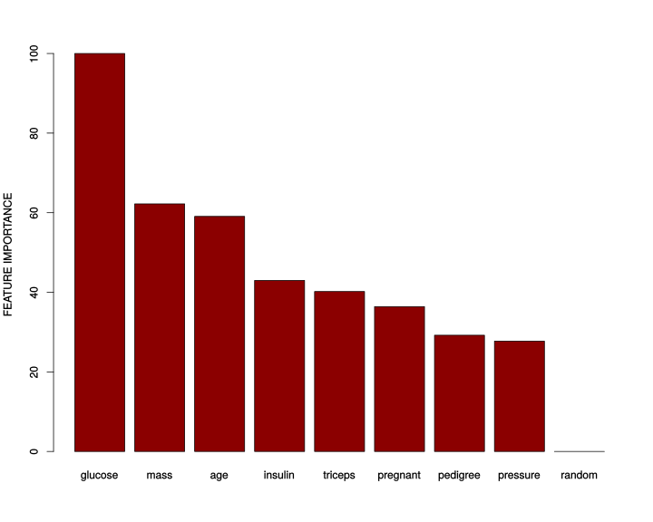
We can see that glucose, age, mass and insulin seems to be the most important predictors which is what we would also expect based on our knowledge about Type 2 Diabetes (T2D). Note, that the random noise variable got the lowest rank. What does it mean? It implies that it is safe to add “garbage” variables (which do not have anything to do with the phenotype of interest) into the data set without doing a manual curation/selection of the variables. This is because ML will recognize them and filter out automatically. So no need to rely on your hypothesis and intuition when building a data set for analysis. ML can discriminate signal from noise very well providing large enough data set.
Now let us use the test data set and make predictions about disease status (positive or negative) of the individuals in the test data:
predictions <- predict(best_model, test)
confusionMatrix(predictions, test$diabetes)## Confusion Matrix and Statistics
##
## Reference
## Prediction neg pos
## neg 141 39
## pos 18 33
##
## Accuracy : 0.7532
## 95% CI : (0.6924, 0.8074)
## No Information Rate : 0.6883
## P-Value [Acc > NIR] : 0.018172
##
## Kappa : 0.3751
##
## Mcnemar's Test P-Value : 0.008071
##
## Sensitivity : 0.8868
## Specificity : 0.4583
## Pos Pred Value : 0.7833
## Neg Pred Value : 0.6471
## Prevalence : 0.6883
## Detection Rate : 0.6104
## Detection Prevalence : 0.7792
## Balanced Accuracy : 0.6726
##
## 'Positive' Class : neg
## The accuracy of prediction is 75% which is quite high.
To compare different algorithms by their performance on the test data set let us plot ROC curves for each algorithm:
library("pROC")
predictions <- predict(best_model, test, type="prob")
my_ROC<-roc(test$diabetes, predictions[,"pos"])
tpr<-my_ROC$sensitivities
fpr<-1-my_ROC$specificities
plot(tpr~fpr,type='l', ylab="TRUE POSITIVE RATE", xlab="FALSE POSITIVE RATE",col="red")
lines(c(0,1),c(0,1))
colors_vector<-c("blue","green","magenta","orange")
names_vector<-names(summary(results)$statistics$ROC[,4])
names_vector<-names_vector[-which(names_vector==names(summary(results)$statistics$ROC[,4])[as.numeric(summary(results)$statistics$ROC[,4])==max(summary(results)$statistics$ROC[,4])])]
for(i in 1:length(names_vector))
{
current_model<-get(paste0("fit.",names_vector[i]))
current_predictions <- predict(current_model, test, type="prob")
current_ROC<-roc(test$diabetes, current_predictions[,"pos"])
current_tpr<-current_ROC$sensitivities
current_fpr<-1-current_ROC$specificities
lines(current_tpr~current_fpr,type='l',col=colors_vector[i])
}
legend("bottomright", c("LDA","CART","KNN","SVM","RF"), fill=c("red",colors_vector), inset=0.02)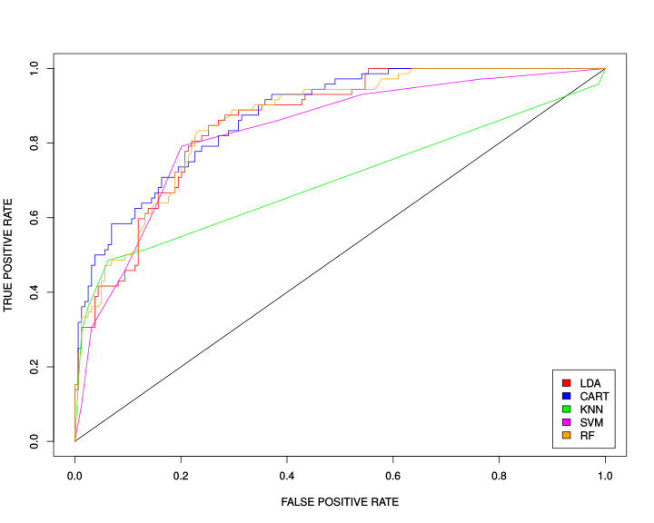
We conclude that all algorithms except maybe CART perform with comparable accuracy.
6 Artificial Neural Networks (ANN)
We have seen in the previous section that diabetics and non-diabetics seem to be linearly separable. So in this particular case it does not make much sense to run a Neural Network on this data set because one uses the full power of ANN when there are non-linear relationships in the data, i.e. classes are non-linearly separable. However for demonstration purpose let us run a Neural Network with 1 hidden layer and 3 hidden neurons:
library("neuralnet")
set.seed(12345)
train$diabetes<-as.numeric(train$diabetes)
test$diabetes<-as.numeric(test$diabetes)
NN = neuralnet(diabetes ~ pregnant + glucose + pressure + triceps + insulin + mass + pedigree + age, data=train, hidden = 3 , linear.output = TRUE, act.fct="logistic" )plot(NN, rep="best")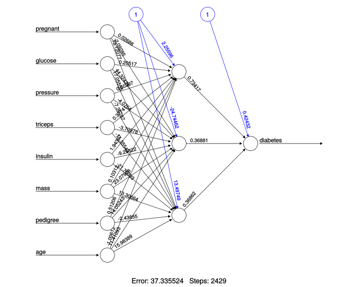
Here we visualize the architecture of the ANN in order to be able to monitor weights and biases. We can also take the trained model and check its performance on the test data set, i.e. make predictions and produce a Confusion Matrix summarizing how many times (per class) our prediction was correct and how many times it was wrong.
prediction <- neuralnet::compute(NN, test[,1:8])
cm<-table(test$diabetes,round(prediction$net.result[,1]))
cm##
## 1 2
## 1 141 18
## 2 31 41To calculate the accuracy of the prediction we need to take the sum of diagonal elements (trace) of the Confusion Matrix, which show how many times we made a correct prediction per class, and divide it by the total number of samples in the test data set.
library("psych")
tr(cm)/sum(cm)## [1] 0.7878788So far so good, but why did we select only one hidden layer and 3 hidden neurons and not 2 or 5 or 20? Well, one hidden layer is very often enough to address majority of real-world problems unless heavily non-linear data is analyzed. The number of hidden neurons is actually a hyperparameter which can be found via Cross-Validation (CV).
set.seed(1)
train_and_validate<-scaled_PimaIndiansDiabetes2[sample(1:dim(scaled_PimaIndiansDiabetes2)[1],0.7*dim(scaled_PimaIndiansDiabetes2)[1]),]
train_and_validate$diabetes<-as.numeric(train_and_validate$diabetes)
test<-scaled_PimaIndiansDiabetes2[!rownames(scaled_PimaIndiansDiabetes2)%in%rownames(train_and_validate),]
test$diabetes<-as.numeric(test$diabetes)
N_neurons<-10
N_cv<-10
accuracy<-vector(length=N_neurons)
for(i in 1:N_neurons)
{
print(paste0("NUMBER OF HIDDEN NEURONS: ",i))
accuracy_cv<-vector(length=N_cv)
for(j in 1:N_cv)
{
validate<-train_and_validate[sample(1:dim(train_and_validate)[1],0.2*dim(train_and_validate)[1]),]
train<-train_and_validate[!rownames(train_and_validate)%in%rownames(validate),]
NN = neuralnet(diabetes ~ pregnant + glucose + pressure + triceps + insulin + mass + pedigree + age, data=train, hidden = i , linear.output = TRUE, act.fct="logistic")
prediction <- neuralnet::compute(NN, validate[,1:8])
corrected_prediction<-round(prediction$net.result[,1])
corrected_prediction[corrected_prediction==0]<-1
corrected_prediction[corrected_prediction==3]<-2
cm<-table(validate$diabetes,corrected_prediction)
accuracy_cv[j]<-tr(cm)/sum(cm)
}
accuracy[i]<-mean(accuracy_cv,na.rm=TRUE)
}
names(accuracy)<-seq(1:N_neurons)
accuracy
plot(accuracy~seq(1:N_neurons),type='o',xlab="Number of Hidden Neurons",ylab="Accuracy",main="Cross-Validation Accuracy")## [1] "NUMBER OF HIDDEN NEURONS: 1"
## [1] "NUMBER OF HIDDEN NEURONS: 2"
## [1] "NUMBER OF HIDDEN NEURONS: 3"
## [1] "NUMBER OF HIDDEN NEURONS: 4"
## [1] "NUMBER OF HIDDEN NEURONS: 5"
## [1] "NUMBER OF HIDDEN NEURONS: 6"
## [1] "NUMBER OF HIDDEN NEURONS: 7"
## [1] "NUMBER OF HIDDEN NEURONS: 8"
## [1] "NUMBER OF HIDDEN NEURONS: 9"
## [1] "NUMBER OF HIDDEN NEURONS: 10"
## 1 2 3 4 5 6 7
## 0.7598131 0.7570093 0.7504673 0.7130841 0.7252336 0.7214953 0.7074766
## 8 9 10
## 0.7102804 0.6766355 0.6822430
It seems that the accuracy of Cross-Validation (CV) peaks at 1 neurons. Let us use this optimal number of neurons for the final test of accuracy at the test/unseen data set.
NN = neuralnet(diabetes ~ pregnant + glucose + pressure + triceps + insulin + mass + pedigree + age, data=train_and_validate, hidden = as.numeric(names(accuracy)[accuracy==max(accuracy)]) , linear.output = TRUE, act.fct="logistic")
prediction <- neuralnet::compute(NN, test[,1:8])
cm<-table(test$diabetes,round(prediction$net.result[,1]))
cm
accuracy<-tr(cm)/sum(cm)
accuracy##
## 1 2
## 1 134 25
## 2 25 47
## [1] 0.7835498We can see that 1) the accuracy on the test data set was not as good as on the training and validation data sets, 2) overall ANN does not seem to perform better than Random Forest (RF) or Linear Discriminant Analysis (LDA). Further tuning and optimizations are needed, we have tuned only one hyperparameter. Welcome to the real world! Artificial Neural Networks (ANN) have many hyperparameters, they are typically optimized via so-called Grid Search when each combination of hyperparameters is tested. This is a very expensive operation and very often needs GPU computing available. Nevertheless, hyperparameter tuning might lead to a drammatic increase in performance of Neural Networks which is not really the case for traditional Machine Learning algorithms. This represents a huge flexibility and potential of ANNs.
7 Session info
## R version 3.6.0 (2019-04-26)
## Platform: x86_64-pc-linux-gnu (64-bit)
## Running under: Ubuntu 14.04.6 LTS
##
## Matrix products: default
## BLAS: /usr/local/lib/R/lib/libRblas.so
## LAPACK: /usr/local/lib/R/lib/libRlapack.so
##
## locale:
## [1] LC_CTYPE=en_US.UTF-8 LC_NUMERIC=C
## [3] LC_TIME=sv_SE.UTF-8 LC_COLLATE=en_US.UTF-8
## [5] LC_MONETARY=sv_SE.UTF-8 LC_MESSAGES=en_US.UTF-8
## [7] LC_PAPER=sv_SE.UTF-8 LC_NAME=C
## [9] LC_ADDRESS=C LC_TELEPHONE=C
## [11] LC_MEASUREMENT=sv_SE.UTF-8 LC_IDENTIFICATION=C
##
## attached base packages:
## [1] stats graphics grDevices utils datasets methods base
##
## other attached packages:
## [1] psych_1.8.12 neuralnet_1.44.2 pROC_1.15.0 caret_6.0-84
## [5] ggplot2_3.1.1 lattice_0.20-38 mlbench_2.1-1 captioner_2.2.3
## [9] bookdown_0.11 knitr_1.23
##
## loaded via a namespace (and not attached):
## [1] Rcpp_1.0.1 lubridate_1.7.4 class_7.3-15
## [4] assertthat_0.2.1 digest_0.6.19 ipred_0.9-9
## [7] foreach_1.4.4 R6_2.4.0 plyr_1.8.4
## [10] stats4_3.6.0 evaluate_0.14 e1071_1.7-2
## [13] pillar_1.4.1 rlang_0.3.4 lazyeval_0.2.2
## [16] data.table_1.12.2 kernlab_0.9-27 rpart_4.1-15
## [19] Matrix_1.2-17 rmarkdown_1.13 splines_3.6.0
## [22] foreign_0.8-71 gower_0.2.1 stringr_1.4.0
## [25] munsell_0.5.0 compiler_3.6.0 xfun_0.7
## [28] pkgconfig_2.0.2 mnormt_1.5-5 htmltools_0.3.6
## [31] nnet_7.3-12 tidyselect_0.2.5 tibble_2.1.3
## [34] prodlim_2018.04.18 codetools_0.2-16 randomForest_4.6-14
## [37] crayon_1.3.4 dplyr_0.8.1 withr_2.1.2
## [40] MASS_7.3-51.4 recipes_0.1.5 ModelMetrics_1.2.2
## [43] grid_3.6.0 nlme_3.1-139 jsonlite_1.6
## [46] gtable_0.2.0 magrittr_1.5 scales_1.0.0
## [49] stringi_1.4.3 reshape2_1.4.3 timeDate_3043.102
## [52] generics_0.0.2 lava_1.6.5 iterators_1.0.9
## [55] tools_3.6.0 glue_1.3.1 purrr_0.3.2
## [58] parallel_3.6.0 survival_2.44-1.1 yaml_2.2.0
## [61] colorspace_1.4-1Built on: 15-jun-2019 at 21:39:24.
2019 • SciLifeLab • NBIS • RaukR